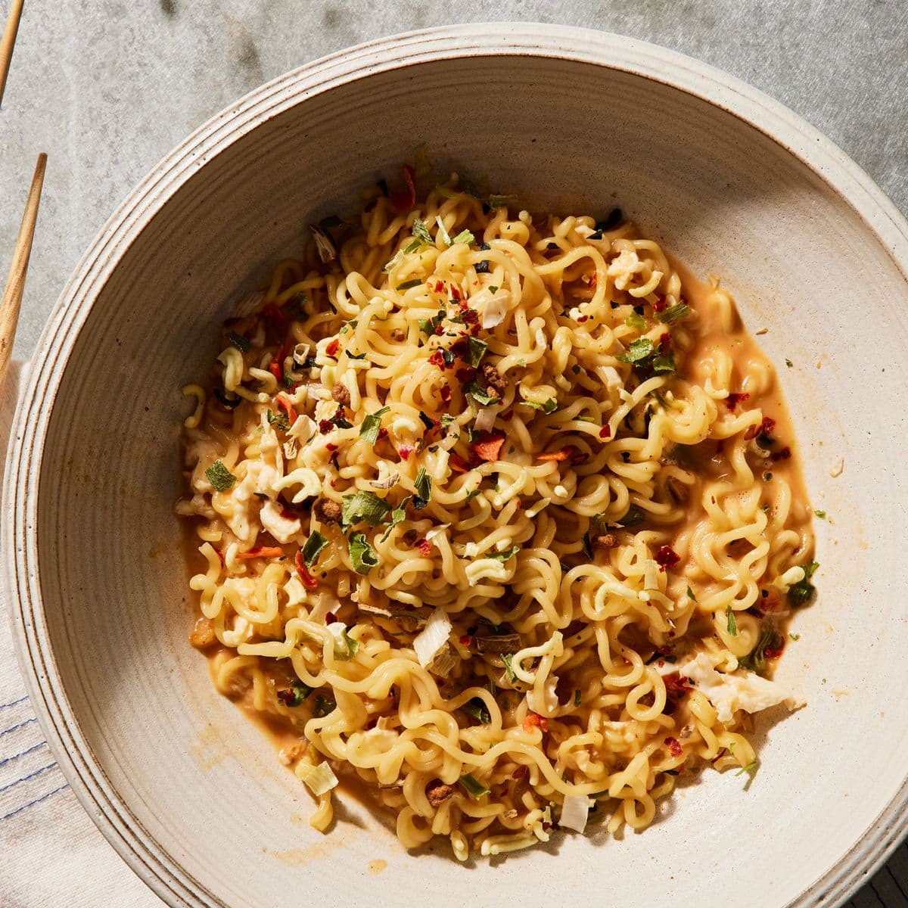

Carbonara Shin Ramyun
Description

This is a quick and easy hack for a simple meal prepared in less than 10 minutes, with minamal ingredients required. Inspired by tiktok hacks,
this has become my go to meal whenever I am craving for carbonara noodles.
Ingredients
- Garlic
- Olive Oil
- Bacon
- Egg
- A packet of Shin Ramyun
- 300ml of Milk
Steps
- Boil the nooldes for 5 minutes and drain it
- Prepare a mixture of egg and half a packet of shin ramyun seasioning and whisk it
- Fry garlic in olive oil until golden, then fry the bacon until crsipy
- Pour in 300ml of milk after frying the bacon, add the noodles into the broth and continue boiling
- Add the mixture of egg and seasioning, allow it to boil until dry